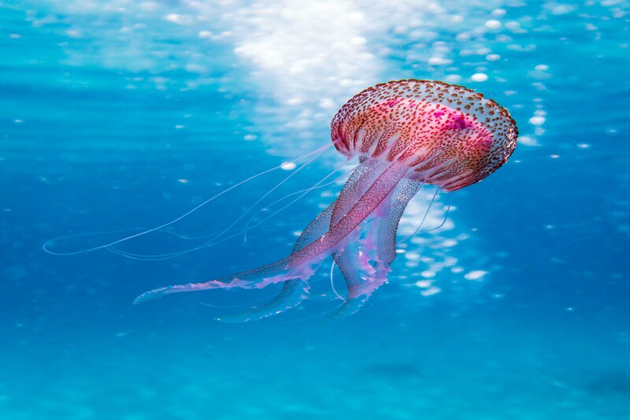
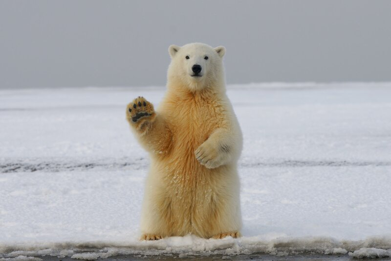
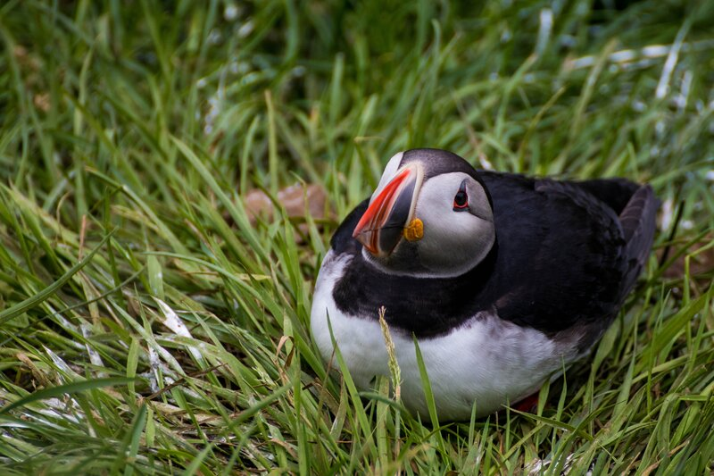

Fauna
Inmortal Jellyfish
Sounds breathtaking right? An immortal being. Well, Turritopsis dohrnii also known as Immortal jellyfish, is a rare jellyfish that could revert from its adult form to its juvenile polyp state, they go down to the ocean floor and became a baby again retracting its tentacles, shrinking its body starting the whole cycle again and what is more astonishing of this is that they can do it over and over again.
Polar Bear
The great white northern can be found in the Artic region, polar bears are stocky, with long necks, relatively small heads, and short tails; they're the most powerful carnivores although one interesting fact is less than 2% of polar bears hunts are successful, they live most of their lives around water and ice, they hunt alone but are socials though, adult polar bears are great swimmers, they can swim for hours to go from one piece of ice to another, they are top predators in their food web this means that there are no other species who hunt them, they play a vital role balancing their ecosystem.
Atlantic Puffins
These beautiful birds have similar colors to penguins with a beautiful colorful beak. During winter it fades to a gray tone and blooms with color during spring, they use it to look attractive to potential mates, like polar bears they spent most of their lives on the sea, resting on the water meanwhile waves move them back on forth when not swimming, most of the puffins' diet consists of small fish like herrings. Surprisingly they are quick flyers by flapping their wings up to 400 times per minute they can reach speeds of 55 miles an hour; Iceland is the site where most of them reproduce 60% of their inhabit can be found there.